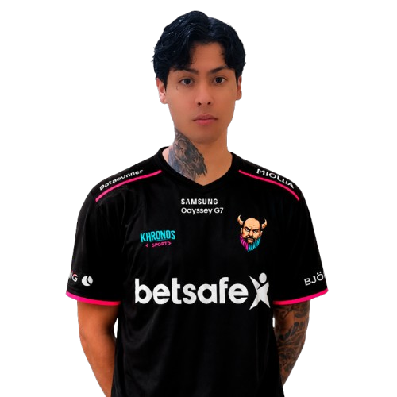

COUNTER-STRIKE • COMPETITIVE TEAM
KHRONOS
E-SPORTS
Nossa equipe, nossos jogadores e nossa trajetória competitiva. Explore o elenco, configurações, periféricos, CFGs e resultados da Khronos.
5Jogadores
4Torneios registrados
4Partidas recentes
2017Primeiro registro
ROSTER
ELENCO ATUAL
Toque em um jogador para abrir seu perfil.

PLAYER
GALANO
Khronos E-Sports

PLAYER
BRX
Khronos E-Sports

PLAYER
BRUXAO
Khronos E-Sports
PLAYER
MAHORAGA
Khronos E-Sports
PLAYER
DEFAULT
Khronos E-Sports
abreusil4sCoach • Comissão técnica da Khronos E-Sports
COACH
COMPETITIVE HISTORY
HISTÓRICO COMPETITIVO
| ANO | TORNEIO | EQUIPE | COLOCAÇÃO |
|---|---|---|---|
| 2017 | Microcamp 2017 | Khronos E-Sports | TOP 1 |
| 2018 | FACEIT League 2018 | Khronos E-Sports | Playoffs |
| 2024 | IEM Dallas - SA Qualifier 1 | Khronos E-Sports | Qualifier |
| 2025 | ESL Pro League Season 21 | Khronos E-Sports | Open |
MATCH HISTORY
JOGOS MAIS RECENTES
30 JUL 2025
DreamHack Open
Team Razor
W 2–1
15 JUL 2025
ESL Challenger
BlueFangs
W 2–0
10 JUN 2025
Local Cup
AlphaCore
L 1–2
02 MAI 2025
Minor Qualifier
Storm
W 2–0
CONFIGURAÇÕES DA EQUIPE
Confira sensibilidade, DPI, resolução, periféricos e CFG de cada player.